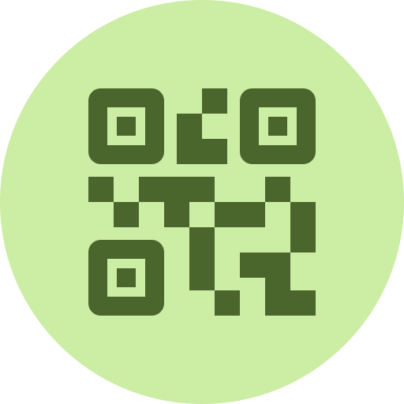

QR Code Generator
more_vert
download
Download
content_copy
Copy
Content
Clear
link
Text or link
wifi
Wi-Fi
contact_page
Contact
mail
Email
sms
SMS
chat
WhatsApp
Text or link
Network name
Password
visibility
WPA/WPA2
WEP
None
First name
Last name
Phone
Email
Organization
Website
Address
To
Subject
Message
Phone number
Message
Phone number with country code
Message
Style
Pattern
Square
Rounded
Dots
Code color
Transparent background
For placing on colored designs
Background color
Margin
0
Error correction
Higher scans better when damaged or covered, but is denser
7%
15%
25%
30%
Logo
Add a logo
Drop an image here, or choose one
add_photo_alternate
Choose
Change
delete
Square logo
Pads wide or tall logos into a square
Logo size
1
Space around logo
0
Export
File name
Format
PNG
JPG
SVG
Size
In pixels
512
1024
2048
download
Download
content_copy
Copy
brightness_auto
Theme
Auto
info
About

QR Code Generator
Simple, customizable QR Code generator.
person
Made by
Việt Anh Bùi
code
Source code
GitHub
arrow_outward
Close